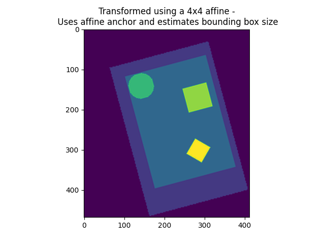

Note
Click here to download the full example code or to run this example in your browser via Binder
9.7.11. Visualization of affine resamplings¶
This example shows how an affine resampling works.
A Nifti image contains, along with its 3D or 4D data content, a 4x4 matrix encoding an affine transformation that maps the data array into millimeter space. If (i, j, k) encodes an integer position (voxel) with the data array, then adding 1 as a fourth entry, (i, j, k, 1), and multiplying by the affine matrix yields (x, y, z, 1), a 4-vector containing the millimeter position of the voxel.
The resampling procedure in nilearn.image.resample_img can attribute
a new affine matrix and a new shape to your Nifti image while keeping its
representation in millimeter space exactly the same (up to sampling error and
possible clipping).
This example shows a 2D image in voxel space, and the position of the data in millimeter space, as encoded by the affine matrix. The image is the resampled in 3 ways and displayed in millimeter space.
4x4 affine matrix and target shape given
3x3 transformation matrix (only new voxel axes, no offset) given and no shape given
4x4 affine matrix given and no shape given
While 1) needs no further explanation (it returns an image exactly as specified, with a new view on the data in millimeter space), 2) and 3) are missing some specification, which is subsequently inferred by resample_img: If the affine offset is missing (3x3 transformation, case 2), then the new image will be the closest bounding box possible around the data along the new axes. If the affine offset is given, but no shape provided, the resulting image will be the closest bounding box around the union of the data points and the affine offset.
Note that specifying a shape without specifying a 3x3 transformation matrix causes an error message, because resample_img will not know where to start the bounding box (there is no intelligent way of inferring this given the bounding box shape).
First make a simple synthetic image
# Create the data with numpy
import numpy as np
from nilearn.image import get_data
grid = np.mgrid[0:192, 0:128]
circle = np.sum(
(grid - np.array([32, 32])[:, np.newaxis, np.newaxis]) ** 2,
axis=0) < 256
diamond = np.sum(
np.abs(grid - np.array([128, 80])[:, np.newaxis, np.newaxis]),
axis=0) < 16
rectangle = np.max(np.abs(
grid - np.array([64, 96])[:, np.newaxis, np.newaxis]), axis=0) < 16
image = np.zeros_like(circle)
image[16:160, 16:120] = 1.
image = image + 2 * circle + 3 * rectangle + 4 * diamond + 1
vmax = image.max()
source_affine = np.eye(4)
# Use canonical vectors for affine
# Give the affine an offset
source_affine[:2, 3] = np.array([96, 64])
# Rotate it slightly
angle = np.pi / 180 * 15
rotation_matrix = np.array([[np.cos(angle), -np.sin(angle)],
[np.sin(angle), np.cos(angle)]])
source_affine[:2, :2] = rotation_matrix * 2.0 # 2.0mm voxel size
# We need to turn this data into a nibabel image
import nibabel
img = nibabel.Nifti1Image(image[:, :, np.newaxis], affine=source_affine)
Now resample the image
from nilearn.image import resample_img
img_in_mm_space = resample_img(img, target_affine=np.eye(4),
target_shape=(512, 512, 1))
target_affine_3x3 = np.eye(3) * 2
target_affine_4x4 = np.eye(4) * 2
target_affine_4x4[3, 3] = 1.
img_3d_affine = resample_img(img, target_affine=target_affine_3x3)
img_4d_affine = resample_img(img, target_affine=target_affine_4x4)
target_affine_mm_space_offset_changed = np.eye(4)
target_affine_mm_space_offset_changed[:3, 3] = \
img_3d_affine.affine[:3, 3]
img_3d_affine_in_mm_space = resample_img(
img_3d_affine,
target_affine=target_affine_mm_space_offset_changed,
target_shape=(np.array(img_3d_affine.shape) * 2).astype(int))
img_4d_affine_in_mm_space = resample_img(
img_4d_affine,
target_affine=np.eye(4),
target_shape=(np.array(img_4d_affine.shape) * 2).astype(int))
Out:
/home/circleci/miniconda3/envs/testenv/lib/python3.8/site-packages/nilearn/image/resampling.py:531: UserWarning:
Casting data from int64 to float64
/home/circleci/miniconda3/envs/testenv/lib/python3.8/site-packages/nilearn/image/resampling.py:531: UserWarning:
Casting data from int64 to float64
/home/circleci/miniconda3/envs/testenv/lib/python3.8/site-packages/nilearn/image/resampling.py:531: UserWarning:
Casting data from int64 to float64
Finally, visualize
import matplotlib.pyplot as plt
from nilearn.plotting import show
plt.figure()
plt.imshow(image, interpolation="nearest", vmin=0, vmax=vmax)
plt.title("The original data in voxel space")
plt.figure()
plt.imshow(get_data(img_in_mm_space)[:, :, 0], vmin=0, vmax=vmax)
plt.title("The original data in mm space")
plt.figure()
plt.imshow(get_data(img_3d_affine_in_mm_space)[:, :, 0],
vmin=0, vmax=vmax)
plt.title("Transformed using a 3x3 affine -\n leads to "
"re-estimation of bounding box")
plt.figure()
plt.imshow(get_data(img_4d_affine_in_mm_space)[:, :, 0],
vmin=0, vmax=vmax)
plt.title("Transformed using a 4x4 affine -\n Uses affine anchor "
"and estimates bounding box size")
show()


- 
Total running time of the script: ( 0 minutes 1.264 seconds)
Estimated memory usage: 9 MB